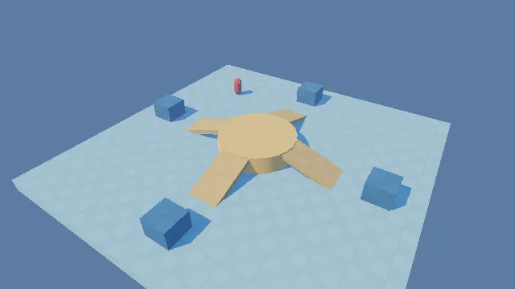
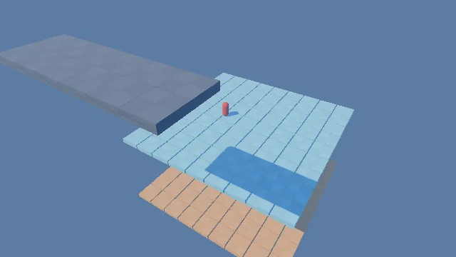

Un studio autour de Godot : tu choisis un modèle de jeu, tu demandes à l'assistant IA ce que tu veux (« ajoute 5 caisses près du départ »), il le fait, le vérifie et le sauvegarde. Export en zip pour les potes.
Projet privé — présenté ici en captures. Code et téléchargement non publics.



12 épreuves : course, roi de la colline, sol qui s'effondre, sumo sur glace…
Style Human Fall Flat : porter une caisse à deux, plaques de pression.
Coop : rayons, clients, caisse et bilan de la journée.
Mode « agir tout seul » avec Ollama.